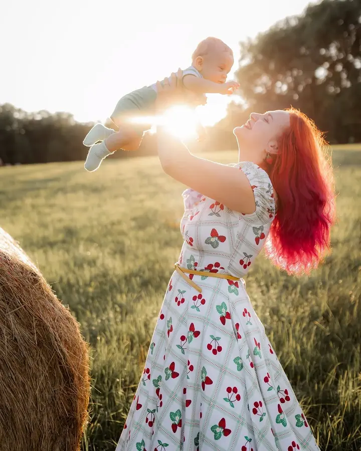
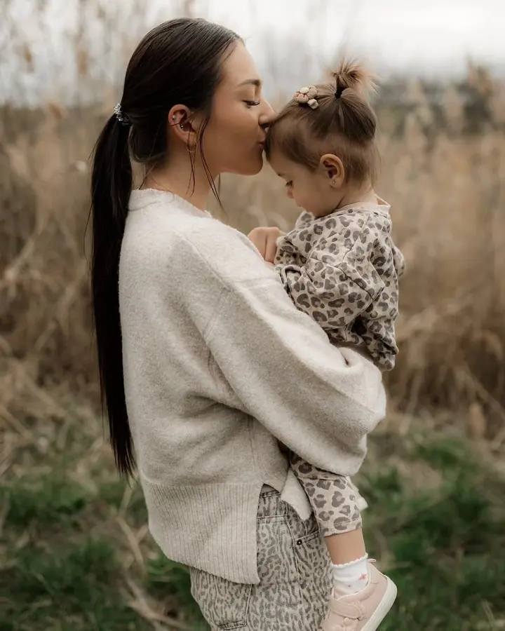
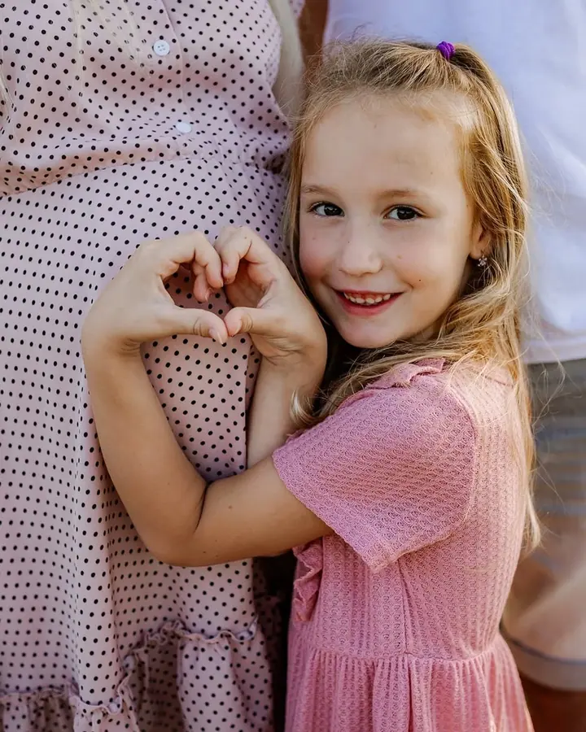

Rodinné focení
Rodinné okamžiky plné lásky a pohody v přirozeném prostředí. Fotím venku v přírodě, nebo klidně v pohodlí a bezpečí vašeho domova.

Jmenuji se Petra Viktorová a fotím rodiny, páry a svatby, převážně v Ústeckém kraji. Nejraději fotím venku v přírodě, nebo u vás doma, kde se cítíte uvolněně a sami sebo…
Rezervovat termínKaždý fotograf vidí svět trochu jinak, má svůj styl a svůj pohled. Proto je důležité najít toho, jehož přístup je vám nejbližší. Věnuji se přirozené rodinné, párové, svatební a portrétní fotografii a krásu vidím hlavně v jednoduchosti a autentičnosti.


Při focení se soustředím na přirozené momenty, emoce a jemné detaily, které vás vystihují. Nejraději pracuji s přirozeným světlem, ať už venku v přírodě, nebo v pohodlí vašeho domova. S dětmi mám trpělivost a nechávám je být samy sebou, takže často ani nepostřehnou, že se fotí.
Mým cílem je, aby fotky byly nejen hezké na pohled, ale hlavně opravdové a nadčasové. Aby vyprávěly váš příběh a abyste se k nim rádi vraceli ještě za spoustu let.
Co fotím
Rodinné okamžiky plné lásky a pohody v přirozeném prostředí. Fotím venku v přírodě, nebo klidně v pohodlí a bezpečí vašeho domova.
Přirozené momenty plné emocí, které vyprávějí váš společný příběh. Bez strojených póz, jen vy dva a chvíle pro sebe.
Křehké a krásné momenty těhotenství, klidně i s partnerem nebo staršími sourozenci. Nejraději v měkkém přirozeném světle.
Přirozeně a s citem fotím všechny důležité okamžiky vašeho dne, od příprav přes obřad až po večerní zábavu. Fotky dostanete v barevné i černobílé variantě.
Postup
Napište mi, jaký typ focení si přejete a jaký termín by vám vyhovoval. Společně pak domluvíme vše potřebné.
Lokaci vybereme podle vzájemné domluvy, venku v přírodě nebo u vás doma. Ráda vám poradím i s výběrem oblečení.
Fotím v klidu a bez strojených póz, nejraději v přirozeném světle. Klasické focení trvá zhruba hodinu, svatba podle zvoleného balíčku.
Náhledy posílám do týdne od focení a hotové fotky do dvou týdnů od vašeho výběru. U balíčku Náš příběh vybírám fotky sama a dostanete je do 2–3 týdnů.
Otázky
Mini focení na 30 minut s 5 upravenými fotkami stojí 1 400 Kč, klasický balíček na hodinu s 10 fotkami 2 000 Kč. Balíček Náš příběh s 25 fotkami a celou sérií ze dne focení vyjde na 4 000 Kč.
Obřad za 6 000 Kč (3–4 hodiny focení), obřad a hostina za 11 000 Kč (6–8 hodin) a celý den D za 15 000 Kč (8–10 hodin). Fotky vždy dostanete v barevné i černobílé variantě.
Obvykle do 2–3 týdnů. U svatby posílám malou ochutnávku do 3 dnů a kompletní galerii do 3 týdnů od svatby.
Fotím převážně v Ústeckém kraji, v okolí Litoměřic, Ústí nad Labem, Děčína a Teplic. Doprava v okruhu 25 km od Úštěka je v ceně, dál účtuji 9 Kč/km.
Ano, každou fotku nad rámec balíčku si můžete dokoupit za 200 Kč. Nabízím také tisk fotografií, fotoknihy a fotodárky.